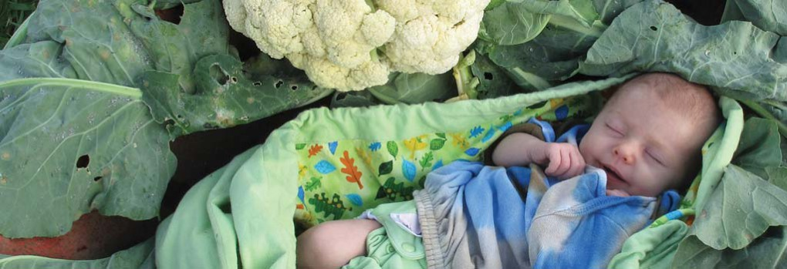

About Permaculture
A system of agricultural and social design principles centered around utilizing patterns observed in natural ecosystems. Permaculture as a philosophy refuses to treat any area as a single product system, rather permaculture mandates a larger, interdependent view of ecosystems and growth cycles.

Our Project:
The Pacific Northwest has a strong history of sustainability, homesteading, and delicious gardens. Our project seeks to link the methodologies of permaculture and update the principles to incorporate an urban environment.
Permaculture encompasses:
Permaculture has many branches, including ecological design, ecological engineering, environmental design, construction and integrated water resources management that develops sustainable architecture, regenerative and self-maintained habitat and agricultural systems modeled from natural ecosystems.

Polyculture:
We are advocating for mixed vegetable gardens. Examples of mixed vegetable gardens include the English Cottage Garden, Caribbean kitchen gardens or the allotments of Bangladeshi communities in London. We have identified two primary characteristics for a mixed garden, companion planting and a layered architecture. Mixed vegetable gardens maximize space (a principle concern for urban gardens) and minimizes the amount of weeding, irrigation, and other diseases that are exacerbated by conventional gardening methods. A mixed garden will leave no bare soil (reducing competition from weeds), the mixture of vegetables will reduce the spread and prevalence of disease and/or parasites, and a layered garden will prevent plants from competing for resources.
Companions:
Some plants have symbiotic relationships with others (onions, carrots, and lettuce, or spinach, onions, and brassicas), while other may have antagonistic relationships (such as alliums (onion and garlic) and legumes (beans and peas) should not be planted together. This knowledge has traditionally been acquired through experience and time. With modern technology we hope to speed up this process and disseminate these lessons to increase food security and increase community and global health.
Layers:
Mimicking the composition of a forest, a garden can also have vegetables at the root level, the understory, and the canopy. Employing tiered growing maximizes precious garden space.